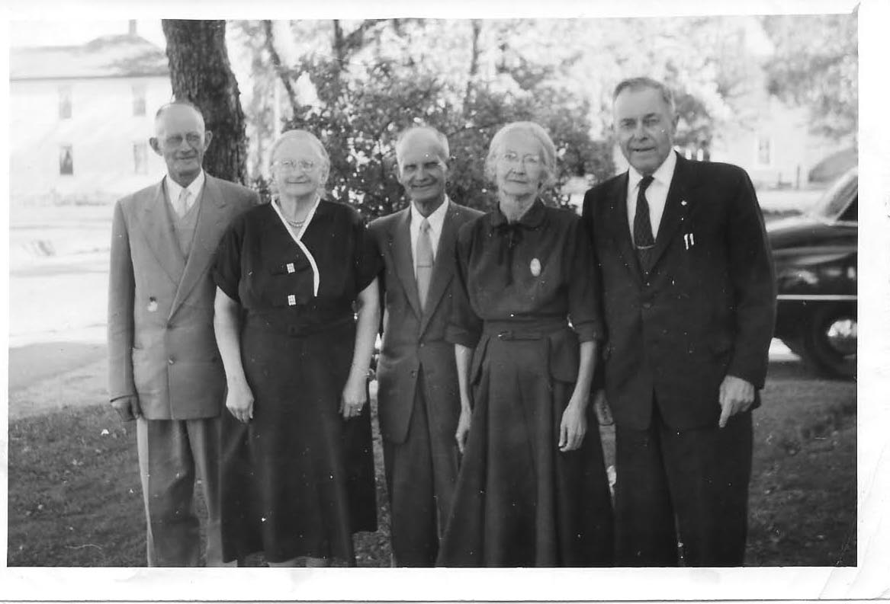

The Family Chronicle
No. 91 January 31, 2005
____________________________________________________________________

Thanks to Tina Newton for this photo of “The Watlings 5”: James A., Jane (Glendenning), Ernest, Janet (Godfrey) and George. Date uncertain but probably mid-1950’s.
Reading W. D. Hamilton’s book on the Old North Esk reminded me of terms used in lumbering. While my woods work was limited to cutting our winter’s wood or a bit extra for sale, my father, like many New Brunswickers, had lumbered in New Hampshire and probably Maine. Several of my brothers also had spent the winter in the woods mostly up the Miramichi.
Based on Hamilton’s book and my own knowledge, there were “choppers” who felled trees and, in earlier days, squared the timber
with their axes; “swampers” who cleared roads or paths to move the logs; “teamsters” who moved the logs using oxen or horses; logs were “twitched” meaning that they were dragged individually from where they were felled to where the sled was stationed; “yarding” meant that they were twitched to a common area, a yard, where they were piled for later transportation; one used a chain for twitching with the chain fastened to the log directly or using a set of grips – like heavy ice tongs which dug deeper when the hauling was heavy.
Logs often had to be “skidded” which meant using skids as ramps in order to pile logs on top of each other. We also used skids to put heavy logs onto the sleds. In a yard, logs were piled on top of each other with runners or smaller pieces between layers. Skids would be placed between the log on the ground and the top of the load forming a ramp. A “piling chain” was placed around the log and over the load and attached to a horse on the other side of the sled. As the horse walked forward, the log was rolled on to the top of the pile. Occasionally, the horse walked too far and pulled the log over to the ground on the other side of the sled.
Chopping was done with a “double bitter”, an axe sharpened on both faces. A poleaxe had only one face and could be used for driving a wedge. Some pole axes had a knob-like projection on the end away from the cutting face.
Of
course, one sometimes needed a wedge to nudge the tree in the
direction of fall. Ours were made of steel, however, sometimes with
a big tree and a heavy lean, a wooden wedge was made on the spot
from an available piece of hardwood. Another trick to felling a
tree leaning in the wrong direction, was to cut a notch as high as
one could reach and use a short stick for better leverage.
Sometimes a peavey was used for extra leverage.
A peavey was useful as a lever and using the dog to cant or turn a log so that it would fit better. A pick pole (pike pole?) was a slender pole with a sharp metal end, like pikes used by knights in battle, used when rafting to manipulate logs. Canthooks would also have been used to move logs in a millpond.
The term “can’t hook” was used but not common. My brothers tell me it was another name for a peavey. The use of the term was usually accompanied by a story of a woods crew that sent the newest member of the crew back to the house to get a cant hook. In the story, the young man returned with a “humble cow – because it can’t hook.
Northumberland: Fulfilling the Dream by Patricia Hubbard’s reports on a couple of meetings held in 1933 to discuss economic development in Northumberland County. Delegates to the second meeting from Black River Agricultural society, #103, were E. A. Glendenning, Sinclair Williston and Archie MacNaughton.
The words for the Preacher and the Bear can be found on the internet. I should have thought of that. I’ll not repeat them here. I also found the Wreck of the Hesperus and other poems I learned as a boy. Thanks, Donald.
A running pole was as long, slender pole, with a metal end used to put up or change a forker line for handling hay. A special scissor-like hook holding a pulley was placed on the end of the pole and pushed up against a rafter in the roof of the barn over the hay mow. When the hook “bit” into the rafter, the pole was removed leaving a pulley hanging. The hooks could be moved depending on where the hay was to be stowed. To move the hooks, one used a running pole.
The Chronicle is an occasional newsletter published by Don Glendenning and posted on the family website. It is intended to share information about my family, community and the times in which I grew up. While every effort is made to be accurate, errors are likely to occur. Comments, enquiries and information may be sent to 62 Queen Elizabeth Drive, Charlottetown, PEI, C1A 3A9. Tel:902 892 5859. Email: dglende@auracom.com Web: www.glendenning.net